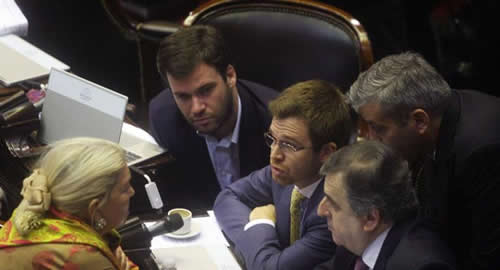

Real Chubut - Agencia de Noticias


Diputados aprobó proyecto que declara la “emergencia tarifaria”

En medio de las turbulencias por el tipo de cambio, la oposición logró la media sanción del proyecto que declara la emergencia tarifaria, que apunta a limitar los futuros aumentos en las boletas de luz, gas y agua.
Los distintos bloques en que se divide el peronismo y otros bloques menores de la oposición pudieron cerrar filas detrás de una iniciativa que propone retrotraer los valores de las tarifas a noviembre del año pasado, y que impide que las eventuales alzas sean superiores a la evolución del Coeficiente de Variación Salarial (CVS) en el caso de los usuarios residenciales, y al Índice de Precios Internos al Mayor (IPIM) publicado por el INDEC para pymes y cooperativas de trabajo.
En total, fueron 133 votos a favor, 94 negativos y tres abstenciones, al cabo de 12 horas y media de debate.
En medio de las turbulencias por el tipo de cambio, los distintos bloques en que se divide el peronismo y otros bloques menores de la oposición pudieron cerrar filas detrás de la iniciativa que propone retrotraer los valores de las tarifas a noviembre del 2017.
Además, impide que las eventuales alzas sean superiores a la evolución del Coeficiente de Variación Salarial (CVS) en el caso de los usuarios residenciales, y al Índice de Precios Internos al Mayor (IPIM) publicado por el INDEC para pymes y cooperativas de trabajo. El proyecto fue suavizado en su redacción por iniciativa del peronismo "no K" de Argentina Federal y el Frente Renovador.
Mientras se sucedían uno tras otro los discursos en el recinto, los diputados Marco Lavagna (Frente Renovador) y Diego Bossio (Justicialista), en aras de mitigar el impacto fiscal de la medida, negociaron cambios al proyecto original, como excluir al transporte y los peajes de la regulación. En ese sentido, sólo quedó en pie el límite a los aumentos en las facturas de luz, agua y gas (incluida la garrafa).
También se quitaron las restricciones a las subas sobre las facturas de consumos más altos, en tanto que ya se había dado marcha atrás con la reducción del IVA en las tarifas de servicios públicos.
En este marco, el diputado del bloque Justicialista Sergio Ziliotto destacó que no se limitaron al dictamen que habían obtenido sino que siguieron "trabajando" para mejorar la redacción hasta último momento.
"No somos ni desestabilizadores, ni golpistas, ni demagogos. Somos los mismos que fuimos partícipes de la mayoría de los consensos en esta Cámara", resaltó.
El diputado del PRO Luciano Laspina cuestionó este miércoles el proyecto debatido en el recinto de Cámara de Diputados para poner límites a los aumentos tarifarios, y aseguró que sus "autores ideológicos" son los que llevaron al país a "esta situación catastrófica" en materia energética.
Para el presidente de la comisión de Presupuesto, la propuesta opositora "básicamente volver al pasado", dado que supone "congelar las tarifas es términos reales", en lo que representa una "versión aggiornada de la iniciativa que presentó Cristina Fernández de Kirchner en el Senado".
"La presidenta que nos dejó en esta situación y que ahora nos propone una solución, es la que logra unificar a toda la oposición detrás de esa idea renovadora", advirtió.
Al poner en foco la política de subsidios del kirchnerismo, que calificó de "descontrol", Laspina consideró que el congelamiento de tarifas "llevó por un lado a la pérdida de la soberanía energética" y a que el país "pase de exportador energía al mundo a tener que importar".
En tanto, la diputada del Frente Renovador Graciela Camaño defendió la facultad que tiene el Congreso Nacional para debatir las tarifas al señalar que el objetivo es "proteger los derechos de los usuarios", al rebatir la posición del gobierno nacional que sostiene que es una atribución exclusiva del Poder Ejecutivo Nacional.
Al hablar en la sesión especial donde se debate el dictamen impulsado por la oposición para atenuar el aumento tarifario, Camaño señaló que el Parlamento puede legislar sobre tarifas porque el artículo 42 de la Constitución habla de la defensa de los usuarios.
En ese sentido, la legisladora dijo que "está claro que el Congreso es la autoridad que debe proteger los derechos de los usuarios, que no implica que homologue tarifas, sino que establece las reglas de las mismas".
En su discurso, Camaño reclamó al oficialismo que no le digan "demagogos porque nosotros no vamos atrás de nadie", y cuestionó a Cambiemos porque siempre habla de la República pero "República es división de poderes, controlar al Estado".
Camaño también criticó la renegociación de los contratos de las concesionarias porque "no hay compromiso de inversión y no han hecho absolutamente nada".
Por su parte, el diputado Máximo Kirchner acusó en el Congreso al presidente Mauricio Macri de haber realizado "demagogia electoral" porque en el debate presidencial que protagonizó con su rival, Daniel Scioli, dijo que "no iba a haber tarifazos, y después lo hizo".
Al exponer en la sesión especial impulsada por la oposición para tratar el proyecto para eliminar los aumentos de los servicios públicos, el diputado defendió la política energética de los gobiernos de sus padres, Néstor Kirchner y Cristina Fernández, y dijo que este Congreso "no puede ser la cara del ajuste de (Marcelo) Mindlin y (Juan José) Aranguren", en alusión al dueño de Edenor y al ministro de Energía.
"Hablan de pesada herencia pero Néstor Kirchner recibió el país de la mano del senador (Eduardo) Duhalde, que era un senador a cargo del Poder Ejecutivo porque muchos de los que estaban en frente habían huido", aseguró el jefe político de la agrupación opositora "La Campora".
En su discurso, Máximo Kirchner dijo que "en el 2017 los ministros dijeron que no iba a haber aumento, le mintieron de nuevo a la sociedad y eso en algún momento se paga".
Subrayó que "tienen la suerte de tener una oposición responsable, como somos nosotros, y no como tuvimos nosotros, que nos dejó sin presupuesto, o que avaló el corte de rutas en la Argentina durante más de 100 días, o que avaló a las fuerzas de seguridad para que se levantaran y dejaran a los argentinos sin seguridad".
A su turno, el diputado nacional de Evolución Radical, Martín Lousteau, aseguró que "no es solamente el nivel de las tarifas lo que genera preocupación y angustia" en la gente, sino también "qué va a pasar en el futuro", y advirtió que "los que plantean ahora la solución fueron los que crearon el problema".
"Los que plantean la solución crearon el problema. El Gobierno se cierra", aseguró Lousteau, al hablar en el recinto donde se debate el proyecto opositor para congelar las tarifas de servicios de luz, gas y agua, y puso de relieve la propuesta de su bloque de modificar las tarifas "gradualmente en ocho años, sin tanto impacto inflacionario y en el nivel de actividad".
Lousteau consideró, no obstante, que "aunque tuviéramos más plata, al final nunca podemos brindarle a la ciudadanía lo que se merece", y advirtió que "este es el debate pendiente: cómo administrar mejor los recursos del Estado, que cada vez tiene más y da menos".
El economista admitió: "Tenemos angustia generalizada, no importa a quién se votó". Es una discusión en la que, si todo sigue el curso y se aprueba y es vetado, nos vamos a ver obligados a abordar otra vez el tema de las tarifas y el tema fiscal", afirmó al hablar en el recinto.
Lousteau, ex ministro de Economía kirchnerista, consideró que "podemos discutir el dictamen de mayoría hoy, pero hay una discusión más profunda con respecto a las tarifas y al Estado. Tenemos un Estado que tiene una presión tributaria récord. Es la presión tributaria más alta del mundo".
El diputado peronista Diego Bossio aseguró que "no estamos hablando en este debate sobre gobernabilidad, sino de los aumentos de tarifas que perjudican a los argentinos", al defender el proyecto que busca retrotraer los aumentos a noviembre del año pasado en los servicios de luz, gas y agua, y actualizarlos en base a la variación salarial.
Al exponer en la sesión especial propiciada por la oposición para cambiar el esquema tarifario dispuesto por el Poder Ejecutivo, Bossio dijo que "vemos una actitud del Gobierno que cada día se encierra en sí mismo y evitar responsabilidades cuando son ellos que tienen que dar soluciones para salir de las crisis".
"No hay gradualismo ni schok la unica solución tiene que ser el crecimiento económico", agregó y dijo que lo que "está faltando ahora es diálogo político entre el oficialismo y la oposición".
En ese contexto, Bossio añadió que "no somos golpsitas y no estamos discutiendo gobernabilidad sino los problemas que tienen los argentinos con el aumento de las tarifas".
Bossio recordó que entre 2016 y 2017 "los salarios crecieron 63%, mientras que las tarifas de gas lo hicieron 927%, y las de electricidad 920%", y por eso señaló que "es momento de parar la pelota y pensamos en los más necesitados".
Previamente, el oficialismo logró convertir en ley el proyecto de Defensa de la Competencia, que apunta a sancionar la cartelización de los mercados y las conductas desleales de concentración económica y abuso de posición dominante.
Con la ayuda del interbloque Argentina Federal y del Frente Renovador, el proyecto (que llegó a Diputados en revisión tras la inserción de cambios en el Senado) cosechó 163 votos afirmativos contra 74 negativos y una abstención, y de esa manera superó la mayoría especial requerida por no contar con dictamen previo.
Será el tercer intento opositor por abordar el proyecto, luego de fracasar, hace tres semanas, en la posibilidad de reunir quórum (le faltó un diputado) y de no conseguir hace dos semanas la mayoría de los dos tercios para aprobar los proyectos.
En este marco, unas cien multisectoriales se manifestarán contra la suba de tarifas en diferentes ciudades del país y llaman a protestar frente al Congreso desde las 18, y bajo la consigna #NoAlTarifazo, piden a los usuarios que publiquen en las redes sociales sus facturas de gas, agua y electricidad.
Fuente: Ambito